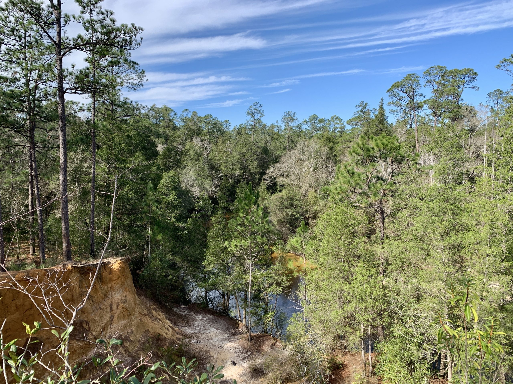
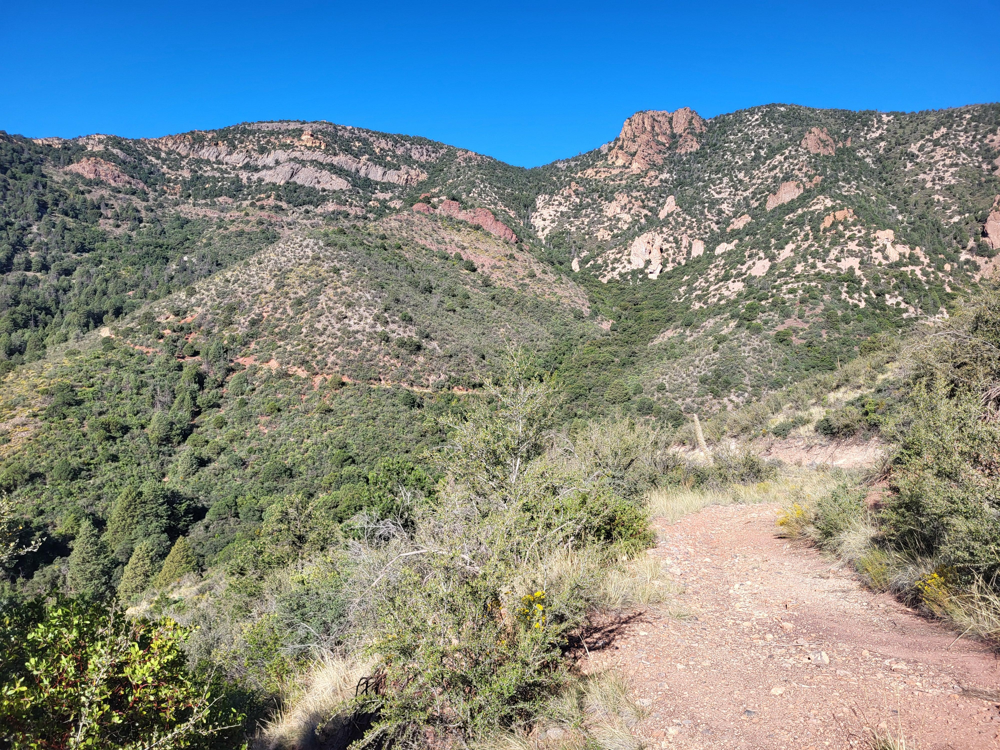
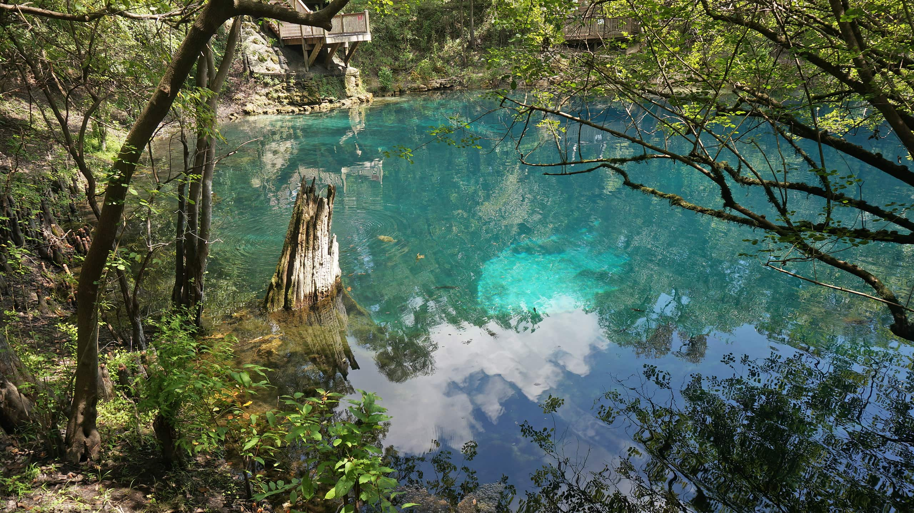

Juniper Creek Loop
- Difficulty
- Easy
- Distance
- 4.8 miles
- Estimated time
- 2–2.5 hours
- Elevation gain
- 620 ft
- Dogs
- Check current park rules
Hill Country Trail Guide
Compare the practical details first, then plan a hike that fits your experience and available time.
Explore trailsPopular choices
Compare distance, time, elevation, and trail rules before you head out.



Plain-language help
Get a quick explanation of the labels used to describe hiking trails.
Hiking trail difficulty levels are typically classified using descriptive terms (Easy, Moderate, Difficult/Strenuous) and technical scales (like the Yosemite Decimal System) based on distance, elevation gain, and terrain.
Easy: Relaxed walks suitable for walkers with average levels of fitness and in general good health. These walks are typically on maintained trails or quiet roads and have good signage.
Moderate: Mostly easy but may include longer hikes on some days with some moderate uphill or downhill elevations. Generally, the walking routes are well maintained but may involve some rougher terrain and steeper or exposed sections on certain days.
Trip planning
Tell us a little about your plan. This classroom form does not send data to a server.
Check park information before leaving home.
Members park for free.
Bring plenty of water.
Check the weather before heading out. Plan ahead.
Cell service is limited. Have a plan ready.